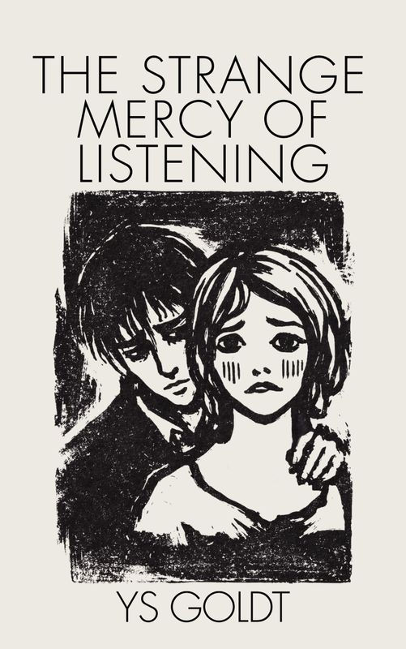

Novel
The Strange Mercy of Listening
A quiet devotion becomes something far more dangerous when silence learns to speak back.
An atmospheric historical novel with a dark romantic core.
- Print length
- 162 pages
- ISBN
- 9798996205226

Novel
A quiet devotion becomes something far more dangerous when silence learns to speak back.
An atmospheric historical novel with a dark romantic core.